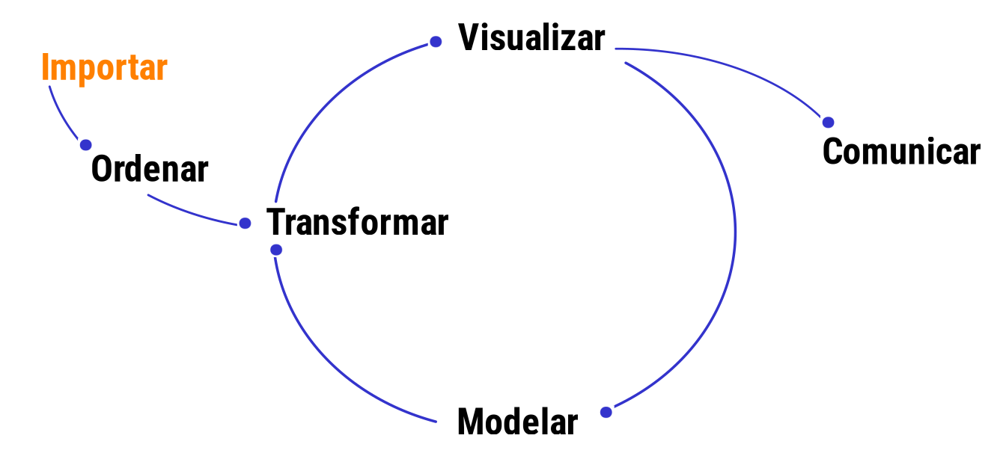

Importación de datos
Métodos y Simulación Estadística
La importación de los datos es una de las etapas importantes del proceso para el análisis de datos, que depende del formato y las fuentes generadoras los datos. Esta etapa forma parte del ciclo los de datos.

Tomado de Ciencia de Datos y Políticas Públicas
En R se puede importar los datos de diferentes formas:
1. Utilizando el menú RStudio

| formato .txt | File/Import Dataset/From Text (base) | formato texto separado por espacios |
| formato .csv | File/Import Dataset/From text (base) | formato csv separado por ; o por , |
| formato .xlsx | File/Import Dataset/ From Excel | formato excel |
| formato .dat | File/Import Dataset/ From SPSS | formato SPSS - programa estadístico |
| formato .sas7bdat | File/Import Dataset/ From SAS | formato SAS - programa estadístico |
| formato .dta | File/Import Dataset/ From Stata | formato STATA - programa estadístico |
Nota
Los anteriores caso implican que tengamos la base de datos descargada en una carpeta de nuestro PC
2. Utilizando API y token desde un repositorio externo
Podemos importar la base de datos de un repositorio que maneje API a
través de un token. En este caso debemos solicitar el token e instalar
el paquete RSocrata
Ejemplo
El siguiente código importa la base de datos de la Secretaria de Salud correspondiente a las personas reportadas con Covid-19 para el territorio Colombiano. Para ello se debe solicitar en la plataforma de Datos Abiertos Colombia un token y realizar la siguiente solicitud
# install.packages("RSocrata", dependencies = TRUE) # instalación de paquete RSocrata, solo una vez
library(RSocrata) # llamado de libreria
token <- "zxMsD6eXc0zlEMryRGW87Hwrz" # token
Colombia <- read.socrata("https://www.datos.gov.co/resource/gt2j-8ykr.json", app_token = token) # lectura
install.packages("RSocrata", dependencies = TRUE)
library(RSocrata) # llamado de libreria
token <- "zxMsD6eXc0zlEMryRGW87Hwrz" # token
Colombia <- read.socrata("https://www.datos.gov.co/resource/gt2j-8ykr.json", app_token = token) # lectura
Este proceso tarde unos minutos pues la base es grande
Para guardar el archivo en una carpeta data, se
recomienda el formato RDS por ocupar menos espacio. En este
caso se guarda el archivo descargado con el nombre de
Colombia.RDS en la carpeta data/
saveRDS(Colombia, file = "data/Colombia.RDS") saveRDS(Colombia, file = "data/Colombia.RDS")
4. Desde un paquete de R instalado
Es psosible trabajar con una dataset disponible en los
paquetes de R. Para ello solo utilizamos la función
data()
Ejemplo
data(iris) # data set iris
data(cars) # data set cars
data(vivienda_faltantes) # data contenida en paqueteMETODOSdata(iris) data(cars) data(vivienda_faltantes)
Nota
se tiene tengo un archivo en un equipo, puede utiliza la función:
file.choose() , para conocer la ruta donde esta el archivo
y luego se copia la ruta obtenida con Ctrl+C,
file.choose()En este caso se genera la ruta “data/Colombia.RDS”, como resultado de
ejecutar la función anterior y ubicar el archivo a importar.
(Colombia<- readRDS("data/Colombia23.RDS"))
Colombia<- readRDS("data/Colombia23.RDS")R permite importar datos en diferentes formatos :
Tabla 1.1 : formatos de datos importados en R
| Formato | libreria R | código |
|---|---|---|
| .texto | library(readr) |
datos <- read_delim("ruta_del_archivo/datos.txt", delim = ",") |
| .csv | library(readr) |
datos <- read.csv("datos.csv") |
| .xlsx | library(readxl) |
datos <- read_excel("datos.xlsx", sheet = "hoja1") |
| .json | library(jsonlite) |
datos <- fromJSON("datos.json") |
| .stata | library(haven) |
datos_stata <- read_dta("datos_stata.dta") |
| .spss | library(haven) |
datos_spss <- read_sav("datos_spss.sav") |
| .sas | library(haven) |
datos_sas <- read_sas("datos_sas.sas7bdat") |
Retos
- Importa la base de datos a la fecha de Covid-19
install.packages("RSocrata", dependencies = TRUE) # instalación de paquete RSocrata
library(RSocrata) # llamado de libreria
token <- "zxMsD6eXc0zlEMryRGW87Hwrz" # token - cada uno puede obtener su token en la pagina de Datos Abiertos Colombia
Colombia <- read.socrata("https://www.datos.gov.co/resource/gt2j-8ykr.json", app_token = token) # lectura - Importa la base de datos del
dataset:flightsdel paquetenycflights13y explore sus principales características